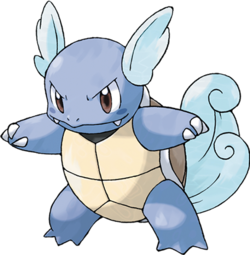
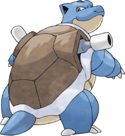
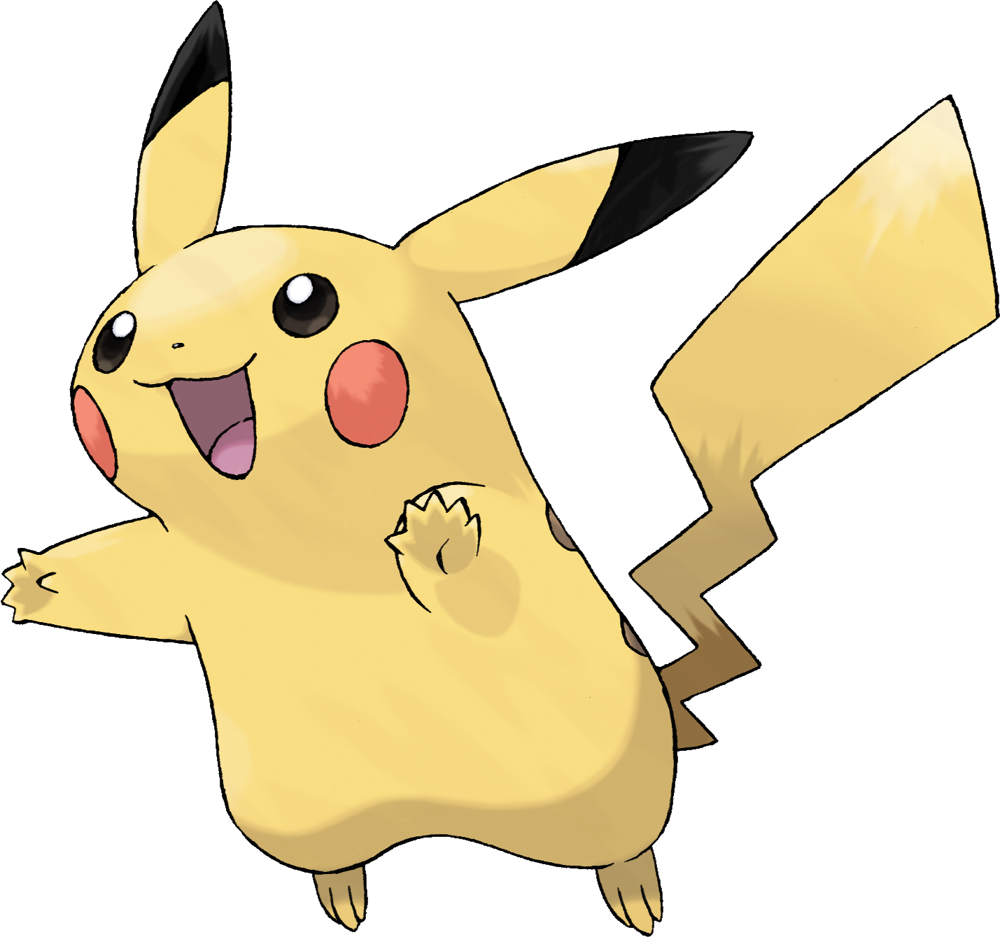
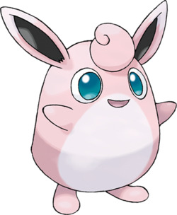

Pokédex
 Le Pokédex est un objet technologique fictif de l'univers Pokémon : il s'agit d'une encyclopédie recensant les créatures fictives connues éponymes. Il permet d'enregistrer les informations sur
les Pokémon. Dans les jeux vidéo Pokémon, le but du joueur est de compléter le Pokédex en capturant l'ensemble des espèces de Pokémon disponibles
Le Pokédex est un objet technologique fictif de l'univers Pokémon : il s'agit d'une encyclopédie recensant les créatures fictives connues éponymes. Il permet d'enregistrer les informations sur
les Pokémon. Dans les jeux vidéo Pokémon, le but du joueur est de compléter le Pokédex en capturant l'ensemble des espèces de Pokémon disponibles
| Pokémon |
|---|
Carapuce
007
Eau

Carapuce est le Pokémon de départ de type Eau offert par le Professeur Chen dans la région de Kanto.
|
Carabaffe
008
Eau

Carabaffe est l'évolution de Carapuce.
|
Tortank009
Eau

Tortank est l'évolution de Carabaffe. On le retrouve sur la jaquette de Pokémon Bleu.
|
Pikachu025
Électrique

Pikachu est un Pokémon Souris de type Électrik apparu dès la première génération. En tant que partenaire de Sacha, héros du dessin animé tiré du jeu, il est le plus célèbre des Pokémon et la mascotte officielle de la licence.
|
Rondoudou039
Normal

Rondoudou utilise ses cordes vocales pour ajuster librement la longueur d'onde de sa voix. Cela permet à ce Pokémon de chanter en utilisant une longueur d'onde qui endort ses ennemis.
|
Grodoudou040
Normal

Leur fourrure est si douce que s'ils se font des câlins, ils ne voudront plus se séparer.
|